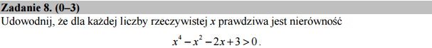

Ławiej powiedzieć niż zrobić!¶
Wystarczy rozwiązać rówanie. Nierówność będzie spełniona dla każdego \(x\), jeżeli równanie nie ma pierwiastków rzeczywistych i jest spełnione da jakiegokolwiek \(x\). To ostatnie widać np. dla \(x=0\)
Nie potrafimy w pamięci rozwiązywać równań czwartego stopnia, więc stosujemy Sage:
I koniec, wszystkie pierwiastki są zespolone!
Można by się jeszcze zastanowić, dlaczego przybliżyliśmy rozwiązanie?
Skasujmy .n() na końcu i zobaczmy co wyjdzie.
Niestety okazuje się, że część urojona jest przedstawiona wyrażeniami
zawierającymi \(i\) co nie daje gwarancji jest urojona. Spróbujmy
dopisać więc .full_simplify(). Wzory mają ok 0.5m długości,
ale przynajmniej mamy matematycznie dokładną odpowiedź.
Hmm - a czy nie dało by się inaczej? Oczywiście. Ponieważ wielomian jest stopnia parzystego, to wystarczy sprawdzić, że we wszystkich minimach funkcja ma wartość dodatnią. Z Sage zajmuje to sprawdzenie tylko chwilkę:
Otrzymujemy jeden pierwiastek rzeczywisty \(x=1\). Funkcja jest więc większa zera w zerze i posiada jedno miejsce w którym znika pochodna. Druga pochodna w tym punktcie jest dodatnia więc mamy minimum. Funkcja w minimum ma wartość \(f(1)=1\) więc
Na zakończenie narysujmy wykres by przekonać się, że nase rozważania sa poprawne: